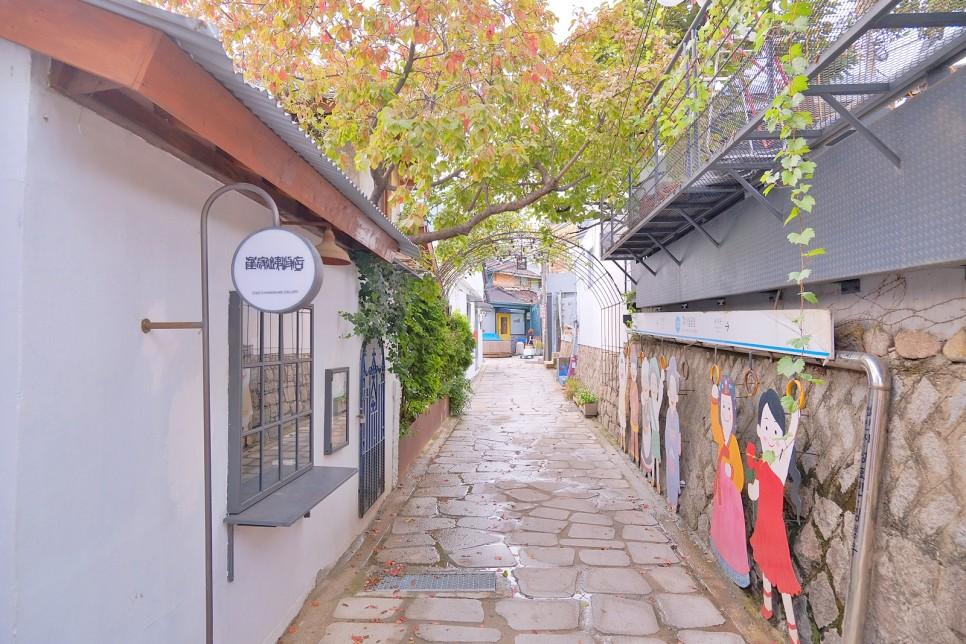

경복궁
한복투어를 할수 있는 조선시대의 궁궐중 하나이자 조선의 정궁

이화마을
서울데이트코스로 좋은 벽화가 있는 마을

북촌한옥마을
한옥밀집지역을 칭하는곳으로 서울에서 유일하게 전통한옥들이 모아있는 곳이다.

낙산공원
서울특별시 종로구 동숭동 산 2-10번지 일원에 있으며, 서울시 공원녹지관리사업소가 관리한다. 야경이 예쁘다.
종로구 맛집

온지음 레스토랑
서울 종로구 효자로 49 4층
한식의 전통을 이어가는 레스토랑

독립밀방
서울 종로구 통일로12길 10-18
콘크리트와 한옥이 조화로운 독립문 브런치 맛집

삼청동 수제비
서울특별시 종로구 삼청로 101-1
잡내없는 깔끔한 수제비집

온천집
서울 종로구 돈화문로11나길 31-8
익선동 일본의 온천마을이 생각나는 1인 샤브샤브

종로도담
서울 종로구 삼봉로 78
예약가능하고 음식이 맛있는 한식집

수와래
서울 종로구 삼청로 82
북촌한옥마을 걷고 백종원 3대천왕이 인정한 북촌 스테이크 맛집